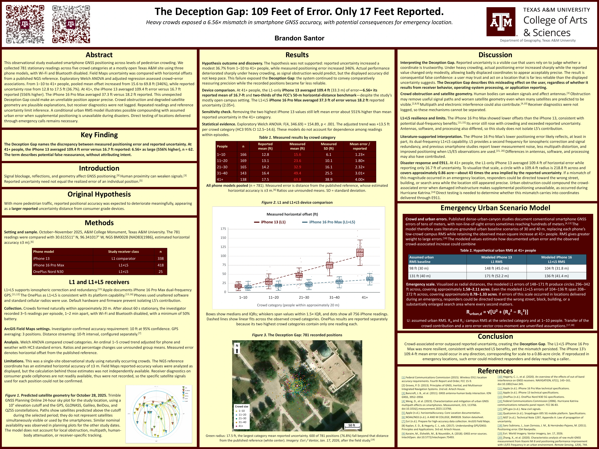
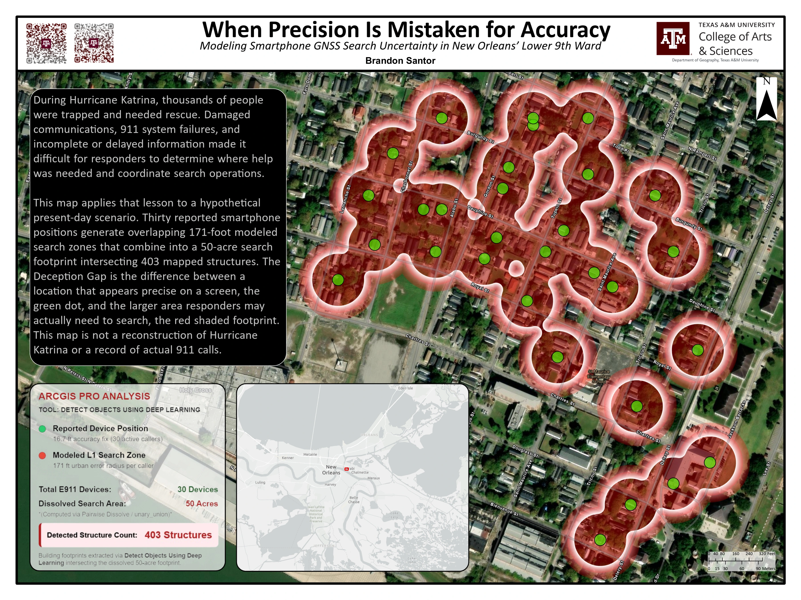
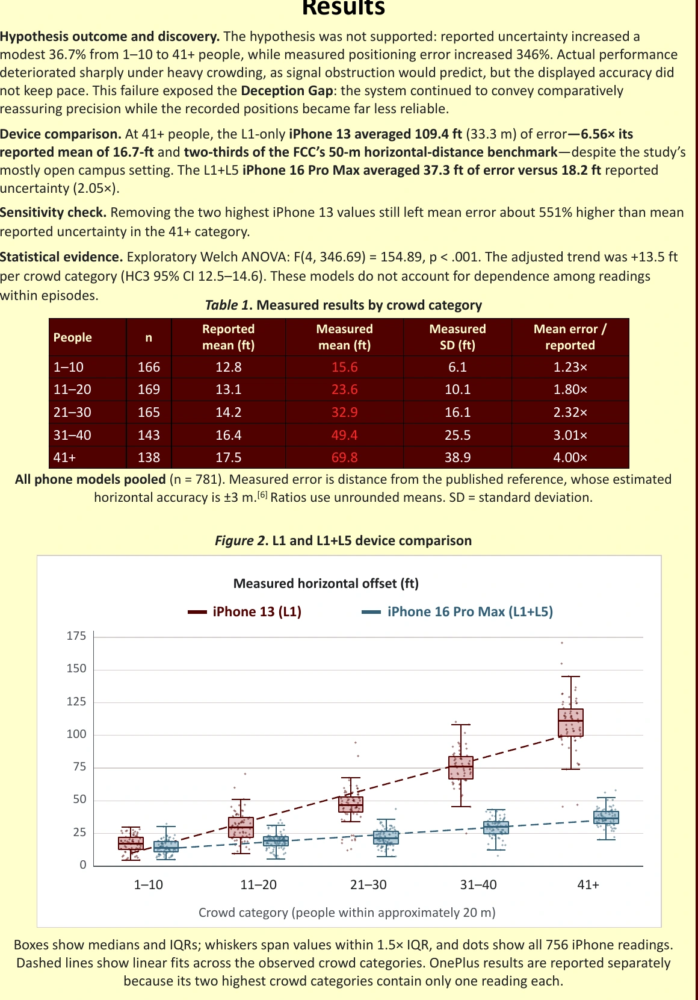

Expand the fieldwork
InputNGS reference + phones
ProcessArcGIS Field Maps collection
Output781 retained readings
Continue the study with expanded collection across three smartphones and five crowd categories.
I expanded a class field project into independent research on satellite positioning: how far can a smartphone’s recorded location be from a survey reference while its uncertainty display still looks reassuring?
Project at a glance ↓


iPhone 13 · 41+ people category · Mean offset vs. phone estimate (feet)
A small accuracy radius can look convincing on a screen. I investigated whether device-reported uncertainty tracked observed horizontal error as pedestrian crowd conditions changed.
The work began as a Global Navigation Satellite System (GNSS) class project. I continued it independently, more than doubled the original field collection, developed the analysis, and carried the findings into an updated research poster and a clearly illustrative map scenario.
Classmates contributed to the original class project’s field collection. I led the expanded collection, analysis, interpretation, and continued research.
The updated study contains 781 retained location readings from three smartphones across five crowd categories. ArcGIS Field Maps recorded each position. I measured its horizontal distance from the published National Geodetic Survey (NGS) benchmark BM0028 and compared that observed offset with the uncertainty shown by the phone. In Python, I used Welch’s analysis of variance (ANOVA), a test for comparing group averages when variability differs, and adjusted regression models to estimate group differences while accounting for other variables included in the model.
The practical finding is a mismatch between the phone’s displayed uncertainty and its measured position. In the group with 41 or more nearby people, 62 iPhone 13 readings averaged 109.4 feet from the published benchmark, compared with 16.7 feet of reported uncertainty. The ratio of those group averages is about 6.6. A reassuring number on the screen was therefore not a reliable description of the observed offset in this group.
This is an observational result from one site, not a universal phone-accuracy rate. The benchmark’s estimated horizontal accuracy is ±3 meters. Readings collected during the same field episode may be related rather than fully independent, and the models do not account for that dependence. Because receiver diagnostics were not logged, the study cannot identify a signal-level cause or show how these offsets would appear in locations passed to 911 emergency services.
I added a hypothetical present-day New Orleans layout to make the spatial scale easier to see. Thirty synthetic points and overlapping 171-foot buffers create an illustrative footprint of about 50 acres. The circles are a display scenario, not measured call locations or an exact property boundary.
The points and combined area are illustrative. The scenario is not a reconstruction of historical Hurricane Katrina calls and does not verify the study’s claims against Katrina records. Both original QR links remain in the updated poster.
Explore each stage of the work.
Continue the study with expanded collection across three smartphones and five crowd categories.
Calculate horizontal distance to the reference and retain the device’s reported uncertainty as a separate quantity.
Analyze differences across devices and crowd categories using statistical comparisons and adjusted models.
I developed the updated poster and an illustrative buffer map to make the measured offsets’ spatial scale easier to understand.